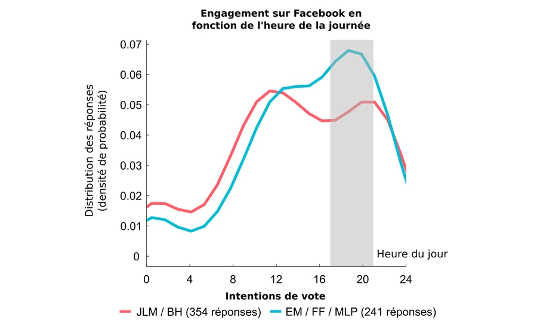

Avec plus de 30 millions d’inscrits en France, le mastodonte du web est devenu un outil incontournable aussi bien pour les hommes politiques, que pour les militants et les journalistes qui font l’actualité de notre démocratie. Les informations qui y circulent participent largement à l’évolution (ou à la stagnation) de nos opinions politiques et à l’idée que nous nous faisons des intentions de vote de notre cercle social.
Depuis 2013, l’algorithme initial de la plate-forme, connu sous le nom de Edge Rank, a été remplacé par plusieurs algorithmes d’intelligence artificielle beaucoup plus complexes: lors de son introduction, un ingénieur de Facebook estimait qu’environ 100 000 facteurs étaient pris en compte pour déterminer quels contenus seraient montrés à un utilisateur donné. Comme je l’écrivais déjà en novembre 2015 après les attentats de Paris, il n’y a pas de raisons autres que complotistes de penser que Facebook utilise son incroyable pouvoir d’influence pour peser sciemment sur l’évolution des sociétés contemporaines.
Mais, il y a également très peu de moyens pour les citoyens et les institutions publiques d’exclure une telle hypothèse, puisque la procédure de référencement des contenus employée par Facebook n’est pas rendue publique, qu’une minorité de contenus partagés est accessible au-delà des “cercles d’amis” (contrairement à Twitter, par exemple) et qu’il est impossible d’afficher ces contenus suivant un ordre réellement chronologique, ce qui faciliterait l’examen de son fonctionnement et des éventuels biais de représentation provoqués chez les utilisateurs.
Quel sera l’impact de ce filtrage “intelligent” sur le scrutin des présidentielles 2017? Nul ne peut le dire avec certitude mais cela ne doit pas nous empêcher de poser la question.
Expérimenter sur Facebook ou le règne du système-D
Dès lors, seule la bonne volonté de citoyens prêts à se coordonner pour effectuer des expériences sur le réseau social permet d’étudier et de surveiller la manière dont l’entreprise contrôle la transmission des informations qui y sont partagées. Ce sont précisément les résultats d’une telle initiative que je rapporte ici (Figure 1).
Dans le but de voir si Facebook favorise ou non certains candidats à l’élection présidentielle et dans quelle mesure “l’effet-bulle” qui nous enferme dans nos propres préférences politiques y est avéré, j’ai demandé à 30 utilisateurs de Facebook de poster successivement cinq messages de soutien aux 5 candidats principaux à l’élection présidentielle: Jean-Luc Mélenchon (JLM), Benoît Hamon (BH), Emmanuel Macron (EM), François Fillon (FF) et Marine Le Pen (MLP). Tous les messages se présentaient sous la forme suivante:
Ça y est, je me suis décidé. Aux présidentielles, je voterai pour XXXXX !
Ceci est une expérience, pas un spam. Pour participer (1 à 5 min) cliquez ici: https://goo.gl/forms/uGy3dRtxu11xKwSe2
S’il vous plait : ne likez pas / ne partagez pas / ne commentez pas ce post
https://www.xxxxx2017.fr/
Les lettres XXXXX étaient remplacées dans chacun des 5 messages par le nom de chaque candidat (exemple: François Fillon et www.fillon2017.fr). Un ordre précis de publication était attribué à l’avance de manière à ce que les messages de soutien à chaque candidat soient publiés autant de fois (6) en 1ère, 2nde, 3ème, 4ème et 5ème position sur l’ensemble des 30 comptes utilisés pour l’expérience. Les contacts de chaque expérimentateur acceptant de remplir le questionnaire Google (voir ici) étaient alors priés de rapporter plusieurs informations:
1°) quel candidat apparaît en premier dans votre fil Facebook?
2°) pour quel candidat pensez vous voter?
3°) pour quel candidat pensez-vous que vos contacts voteront en majorité?
4°) avez vous déjà relayé des informations négatives à l’encontre de certains candidats?
5°) pensez-vous que Facebook est politiquement neutre?
6°) êtes-vous d’accord pour dire que, sur Facebook, on voit prioritairement les contenus qui nous plaisent?
7°) dans quel ordre apparaissent les 5 candidats sur votre fil d’actualité Facebook?
NB: les questions 2-7 étaient optionnelles.
Sur une période d’un mois (du 28 février au 26 mars), 737 réponses ont été collectées sur le réseau social. Bien que les résultats de cette étude apportent des éléments de réponse inédits et parfois inattendus, ils doivent être appréhendés avec un certain recul pour plusieurs raisons: l’échantillon testé n’est pas représentatif de la population française (surreprésentation de participants jeunes, diplômés, et de gauche) et certains facteurs n’ont pas été strictement contrôlés (réactions intempestives sur les posts, nombre de réponses par participants, nombre de réponses par compte, etc.). De plus, il ne s’agit pas d’une étude scientifique au sens strict: sa méthodologie n’a été évaluée par aucun comité de chercheurs et l’auteur de l’étude (en l’occurrence, moi) n’est pas spécialiste de l’analyse des réseaux sociaux.
Malgré tout, on fera remarquer que les instituts de sondage sont - eux aussi - loins de remplir les critères standards de scientificité et qu’ils ne diffusent presque jamais les données brutes recueillies, d’où la multiplication des critiques à leur encontre. A l’inverse, la méthodologie de cette étude, les données brutes et les scripts utilisés pour l’analyse sont intégralement disponibles en ligne (ici), ce qui devrait notamment permettre de répliquer et de perfectionner l’expérience, ou de vérifier les conclusions rapportées. Ces dernières donnent à réfléchir quant au rôle joué par Facebook dans les élections présidentielles et elles montrent l’utilité (voire la nécessité) d’étudier le réseau social pour mieux prendre en compte (voire limiter) son impact sur le processus démocratique en France.

Tant que Facebook refusera que ses utilisateurs et les pouvoirs publics puissent faire l’audit de ses algorithmes et de son utilisation des informations personnelles, ce genre d’approche restera nécessaire.
Les “bulles de filtre” dans le contexte des présidentielles françaises
Discuté et théorisé depuis plusieurs années sous l’impulsion notamment d’Eli Pariser, le problème des bulles de filtre est lié au fait que le réseau social personnalise constamment notre expérience pour nous montrer des contenus avec lesquels nous sommes déjà d’accord ou à propos desquels nous éprouvons un intérêt a priori. Dans une interview accordée au Time, Eli Pariser indiquait que, sur Facebook, “vous vous endoctrinez vous-même avec vos propres opinions. Vous ne réalisez pas que ce que vous voyez n’est qu’une partie du tableau. Et cela a des conséquences sur la démocratie : pour être un bon citoyen, il faut que vous puissiez vous mettre à la place des autres et avoir une vision d’ensemble. Si tout ce que vous voyez s’enracine dans votre propre identité, cela devient difficile, voire impossible”.
Le phénomène doit être distingué de l’enfermement sociologique qui découle du fait (lui aussi très important) que nous sélectionnons nos contacts Facebook sur la base d’affinités préexistantes, qui sélectionnent eux-mêmes leurs contacts de cette manière. Par exemple, dans la présente étude, le très faible nombre de participants déclarant vouloir voter pour François Fillon (10% des intentions exprimées) ou Marine Le Pen (2% des intentions exprimées) reflète sans aucun doute mon propre enfermement socioculturel et la “distance sociale” qui me sépare en moyenne de ces électeurs (Figure 2). Cependant, si nous sommes pour la plupart conscients de notre enfermement sociologique, les bulles de filtres que génèrent les algorithmes de Facebook exercent quant à elles une influence bien plus pernicieuse, car résultant d’un contrôle implicite (et largement méconnu) des contenus auxquels nous sommes exposés.
Dans les données recueillies ici, Facebook a par exemple modifié l’ordre réel des messages postés dans 92% des cas, ce qui a “permis” à plus de 30% (182) des 595 individus ayant exprimé leur intention de vote de voir leur candidat préféré apparaître en premier dans leur fil d’actualité. Statistiquement, une telle proportion n’a presque aucune chance d’arriver par hasard, ce qui indique que Facebook est bel et bien capable de prédire en partie pour quel candidat nous allons voter, et qu’il utilise cette information pour choisir les contenus auxquels nous sommes exposés.

Si l’on décompose l’analyse candidat par candidat (Figure 3), on observe que l’effet est particulièrement vrai pour Marine Le Pen (affichée en premier sur le fil d’actualité de 54.5% de ses électeurs potentiels), pour Emmanuel Macron (en premier sur le fil d’actualité de 38% de ses électeurs potentiels) et, dans une moindre mesure, pour Jean-Luc Mélenchon (34.4%) et François Fillon (28.8%). Seul Benoît Hamon obtient un résultat inverse à la tendance générale, puisque seulement 17.8% de ses électeurs potentiels l’ont vu en premier dans leur fil d’actualité: la figure ci-dessus indique que les électeurs de Hamon ont en fait tendance à voir les prises de position en faveur de Mélenchon ou de Macron en premier, ce qui peut sembler logique compte tenu du retard pris par sa campagne par rapport à ces deux candidats.
“Bulles de filtre” et vote utile
Ainsi, l’existence des bulles de filtre implique que nous ayons tendance à voir des prises de position et des contenus qui nous renforcent dans nos convictions. Elles ont donc une conséquence particulièrement problématique dans le contexte particulier des présidentielles françaises: elles renforcent probablement le mécanisme bien huilé du “vote utile” si souvent décrié. En effet, le vote utile est essentiellement un vote stratégique consistant à voter pour le candidat dont nous pensons qu’il a le plus de chances de gagner face à un adversaire donné. Il dépend donc largement d’un pari sur les intentions de vote du groupe social pris dans son ensemble.
Tout le monde sait qu’Emmanuel Macron représente aujourd’hui le candidat du “vote utile”. Dès lors, si les gens qui pensent voter pour lui sont prioritairement exposés aux prises de positions favorables à ce candidat sur Facebook - au détriment de déclarations (ou contenus partagés) en faveur d’autres candidats - il est clair que cela ne peut que les renforcer dans leur stratégie. Pour voir si le phénomène des bulles de filtre a pu influencer la perception des intentions de vote au sein du groupe social, j’ai croisé les intentions de vote personnelles (question 2) avec l’estimation du vote majoritaire au sein du groupe social (question 3). Les résultats de cette analyse, reportés dans la Figure 4 ci-dessous, sont particulièrement marquants:
- Les électeurs potentiels de Mélenchon ou de Hamon considèrent généralement que leur entourage votera majoritairement pour Mélenchon (47% et 28%, respectivement), pour Hamon (25% et 37%) ou pour Macron (26% et 33%).
- Les électeurs potentiels de Fillon considèrent généralement que leur entourage votera majoritairement pour Fillon (52%) ou pour Macron (41%).
- Les électeurs potentiels de Le Pen considèrent généralement que leur entourage votera majoritairement pour Le Pen (36%), Fillon (27%) ou Macron (36%)
- Enfin, les électeurs potentiels de Macron considèrent que leur entourage votera pour Macron dans 65% des cas, record en la matière. Fillon est, chez ces électeurs, le second candidat jugé le plus souvent majoritaire au sein du groupe social, mais cela n’arrive que dans 13% des cas!
Deux hypothèses sont possibles pour expliquer cette dernière observation: soit les électeurs potentiels d’Emmanuel Macron évaluent correctement le vote majoritaire de leur groupe social, soit ils souffrent d’une distorsion qui les conduit à imaginer Macron plus majoritaire qu’il n’est réellement. Les données collectées ne peuvent pas trancher définitivement, même si la distribution des intentions de vote collectées (voir Figure 2) suggère que les différents groupes sociaux testés ne sont pas tellement favorable à Emmanuel Macron, et donc que la seconde hypothèse à des chances d’être valide. Cependant, si la première hypothèse était valide, cela signifierait que les électeurs potentiels de Macron sont enfermés dans une bulle socioculturelle un peu plus hermétique que les autres, ce qui n’est pas forcément réjouissant non plus… Ceci étant dit, il faut dire que le peu de données disponibles pour Marine Le Pen rend la comparaison avec cette candidate incertaine et que les résultats globaux de l’analyse pourraient varier si l’expérience était répliquée dans un autre milieu social.
Enfin, s’il est important de souligner le fait que les électeurs potentiels d’Emmanuel Macron souffrent d’un effet-bulle plus intense que les autres électeurs, c’est aussi parce que ce résultat tranche avec l’appréciation qu’ils ont du réseau social. Ainsi, ils semblent paradoxalement moins d’accord (6.4) que les électeurs de Hamon (7.3) ou Mélenchon (7.1) pour dire que “Sur Facebook, on a tendance à voir prioritairement les posts de contact partageant nos idées” (de 1, pas du tout, à 10 complètement d’accord; Figure Figure 5, droite). De même, à la question “Avez-vous confiance dans la neutralité politique de Facebook?” (de 1, pas du tout, à 10, complètement confiance), ils obtiennent un score moyen de 4.5; la différence avec les électeurs potentiels de Hamon (3.4) ou Mélenchon (3.1) étant statistiquement significative (Figure 5, gauche).

Question sensible et pente glissante: Facebook avantage-t-il certains candidats?
Techniquement, les données recueillies au cours de cette expérience permettent aussi de déterminer si Facebook avantage certains candidats par rapport à d’autres. Pour éviter que certains exploitent les données mises en ligne en les sortant de leur contexte, je rapporte ci-dessous quelques analyses qui suggèrent qu’Emmanuel Macron pourrait être favorisé par les algorithmes du réseau social, ce qui explique peut-être pourquoi le phénomène des “bulles de filtre” décrit ci-dessus apparaît plus marqué pour ce candidat. Mais, s’il est bon de prendre en compte cet avantage (surtout lorsque l’on appartient à un milieu social semblable à celui de la présente étude), il me faut d’emblée mettre en garde le lecteur contre toute interprétation complotiste qui consisterait à penser que ces analyses révèleraient une manipulation délibérée de Mark Zuckerberg! J’explique pourquoi un peu plus bas.
Le premier indice suggérant qu’Emmanuel Macron est avantagé par rapport aux autres candidats dérive de la comparaison entre la proportion des participants ayant vu chaque candidat en première position dans leur fil d’actualité et la proportion de participants qui auraient du voir ce candidat en premier si l’ordre chronologique était respecté. En effet, Emmanuel Macron est le candidat pour qui cette différence est la plus favorable, que l’on utilise toutes les données disponibles (+9%, contre +5% pour Mélenchon et -11% pour Fillon) ou que l’on exclue systématiquement de l’analyse les réponses où il était le candidat préféré du participant considéré (+5% contre +2% pour Le Pen et -12% pour Fillon).
Ensuite, si l’on examine la probabilité que chaque candidat soit présenté en premier dans le fil d’actualité, sachant qu’il était réellement premier (d’après l’ordre chronologique; Figure 6, gauche), ou la même probabilité, sachant qu’il aurait dû être dernier (toujours d’après l’ordre chronologique; Figure 6, droite), on constate à nouveau un avantage assez clair en faveur d’Emmanuel Macron:
- Lorsqu’il est réellement premier selon l’ordre chronologique de publication, Macron est effectivement vu en premier dans le fil d’actualité dans 45% des cas. Par comparaison, Le Pen (seconde sur cette échelle) n’est effectivement première que dans 30% des cas où elle devrait être première et cette proportion descend à 15% pour JLM (dernier sur cette échelle).
- Lorsqu’il aurait dû être dernier (d’après l’ordre chronologique), Macron apparaît encore en premier dans 53% des cas. Par comparaison, Le Pen (à nouveau seconde sur cette échelle) apparaît première dans 40% des cas où elle devrait être dernière et cette proportion descend à 4% pour Fillon (dernier sur cette échelle).
En regardant de plus près les graphiques qui synthétisent ces données, on constate deux autres tendances intéressantes. Premièrement, Marine Le Pen se substitue souvent à Jean-Luc Mélenchon lorsqu’il devrait apparaître en premier (33% des cas) - et inversement (dans 31% des cas). Deuxièmement, Jean-Luc Mélenchon se substitue souvent à Benoît Hamon lorsque ce dernier devrait apparaître en premier (37% des cas). Ces substitutions correspondent vraisemblablement à l’association de ces différents candidats dans les articles de presse relayés sur le réseau social, puisque l’on sait que de nombreux journalistes aiment rapprocher Jean-Luc Mélenchon et Marine Le Pen d’une part, et que la question du rapprochement entre Hamon et Mélenchon a occupé beaucoup d’espace médiatique ces derniers mois d’autre part.
Le troisième et dernier indice permettant de mettre en évidence le référencement favorable d’Emmanuel Macron provient de l’analyse d’un sous-ensemble des données, focalisée sur la situation où les candidats considérés sont initialement positionnés en 3ème position (c’est à dire, centrale) dans l’ordre chronologique de publication (Figure 7 ci-dessous). En permettant de visualiser simultanément les tendances à la hausse et à la baisse pour sur la base d’une situation bien définie, cette analyse montre que Macron est hissé dans 50% des cas à la première ou à la deuxième place (contre 32% pour Hamon, second, et 21% pour Le Pen, dernière), et dans 41% des cas à la première place (contre 10% pour Fillon, deuxième et 4% pour Le Pen, dernière). Avec Hamon (65%), Emmanuel Macron (64%) est ainsi le candidat qui a le plus de chance de se maintenir ou de monter dans le référencement de Facebook lorsqu’il part d’une position chronologiquement intermédiaire.

Comme je l’ai écrit plus haut, il ne faut pas déduire de ces données qu’Emmanuel Macron est intentionnellement avantagé par l’entreprise, ni que les résultats obtenus seraient réplicables dans n’importe quel milieu social. Il est par exemple possible qu’Emmanuel Macron soit favorisé simplement parce qu’il apparaît plus souvent dans les médias ou parce qu’il suscite en moyenne moins de commentaires négatifs que des candidats plus polarisés - que ce soit à gauche ou à droite. Même si on ne peut strictement exclure cette hyp
zothèse, il reste donc hautement improbable que Facebook favorise intentionnellement un candidat au détriment des autres: il s’agit plus probablement d’un “phénomène émergent” lié au fonctionnement des algorithmes de référencement.
Certes, les recherches académiques sur Facebook existent et permettent d’obtenir des résultats passionnants d’un point de vue sociologique. Certaines sont mêmes sponsorisées par l’entreprise elle-même comme cette étude menée sur 11 millions d’américains parue dans la revue Science en 2015 (qui se voulait évidemment rassurante quant au phénomène des bulles de filtres). Cependant, le contrôle sur la diffusion des contenus exercé par l’entreprise s’est accentuée récemment avec le débat sur les “fake news” et la lenteur de la recherche académique est de toute manière peu compatible avec les temporalités politique ou médiatique. En attendant que Facebook offre plus de garanties concernant son fonctionnement (intentionnel ou accidentel) et compte tenu du précédent que représente sa tentative réussie de “contrôle émotionnel” - publiée en 2013 dans la revue PNAS, la création d’un observatoire citoyen qui conduirait à plus grande échelle des expériences semblables à celle décrite ici serait donc fort utile.
Pour aller plus loin
- L’extension Data Selfie pour Chrome permet de visualiser en temps réel les données que Facebook collecte à notre endroit.
- Le mécanisme de référencement de Facebook évolue rapidement en ce moment, sous l’impulsion notamment du département d’intelligence artificielle de Facebook dirigé par le français Yann LeCun (chercheur à l’origine de la révolution dite du “deep-learning”) qui voudrait même, à terme, que l’expérience de chaque utilisateur soit contrôlée par une intelligence artificielle dédiée. Ainsi, les excellents cours de Yann LeCun données l’an passé au Collège de France (disponible en ligne ici) donnent une très bonne idée des enjeux de l’intelligence artificielle et du type d’algorithmes employés par Facebook aujourd’hui.
- Le magnifique outil Politoscope mis en ligne ce lundi 3 avril par les chercheurs de l’Institut des Systèmes Complexes de Paris-Ile-de-France permet de visualiser avec un très haut degré de précision différentes dynamiques sociales liées à la campagne présidentielle sur Twitter.
- Intitulée “Faut-il brûler Facebook?”, l’’interview donnée à Mediapart par Antonio Casilli, chercheur et maître de conférence à Telecom ParisTech fait le lien entre le business model de Facebook et le principe des bulles en filtres et montre l’importance de la question pour les sociétés démocratiques.
- Aussi fascinant que terrifiant, le documentaire interactif Do-Not-Track décortique la mécanique du profilage individuel sur internet (qui s’étend à nos personnalités, à nos addictions, à nos anxiétés, à notre compte en banque, etc.) et montre que les données extraites des réseaux sociaux sont de plus en plus utilisées par les entreprises privées (par exemple, les compagnies d’assurance) et par les pouvoirs publics (par exemple, pour profiler les immigrants ou pour anticiper voire contrer des mouvements de protestation sociale).
- Enfin, tout le monde ne partage l’idée selon laquelle les bulles de filtre sont si néfastes pour le débat démocratique: voir par exemple la réflexion d’André Gunther au lendemain de l’élection de Donald Trump ou cette étude récente suggérant que les bulles de filtre contribuent moins qu’on ne le pense à polariser l’espace politique (ce qui n’est cependant pas l’argument du présent billet).
Merci à tous les aides-expérimentateurs et à tous les participants qui ont rendu cette étude possible!
Comment Facebook sait-il pour qui vous allez voter?
Bien des choses ont été écrites sur la manière dont Facebook traite nos informations personnelles pour mieux prédire nos préférences (politiques ou autres) et nous exposer à des contenus générateurs de revenus. Au cours de cette expérience, j’ai constaté que certaines personnes se pensaient à l’abri des classifications politiques de Facebook parce qu’elles ne partagent pas et ne réagissent pas aux contenus qui y sont diffusés. Dès lors, pour ces personnes, l’idée qu’une bulle de filtre pourrait malgré tout biaiser leur perception de l’actualité politique semble souvent saugrenue.
Pourtant, un certain nombres de facteurs comme l’âge, le sexe, la composition du cercle de contacts, les contenus visualisés ou le type de pages suivies permettent à Facebook de profiler ces utilisateurs plus spectateurs qu’acteurs. En outre, ses algorithmes peuvent s’appuyer aussi sur des informations indirectes: dans les données décrites ici, il apparaît par exemple que l’utilisation de Facebook au cours de la journée diffère significativement en fonction du clivage gauche-droite (Figure 8): par rapport aux utilisateurs situés à gauche, les utilisateurs de droite présentent un pic d’activité plus marqué entre 17 et 21h, de sorte que la simple répartition de notre activité sur Facebook dit déjà quelque chose de notre orientation politique. Au passage et pour conclure, ce genre d’informations permet aussi à Facebook et aux compagnies qui exploitent ses données d’avoir une idée assez précise de notre rythme circadien (ou “horloge biologique”), ce qui ouvre une porte sur notre hygiène de vie…
